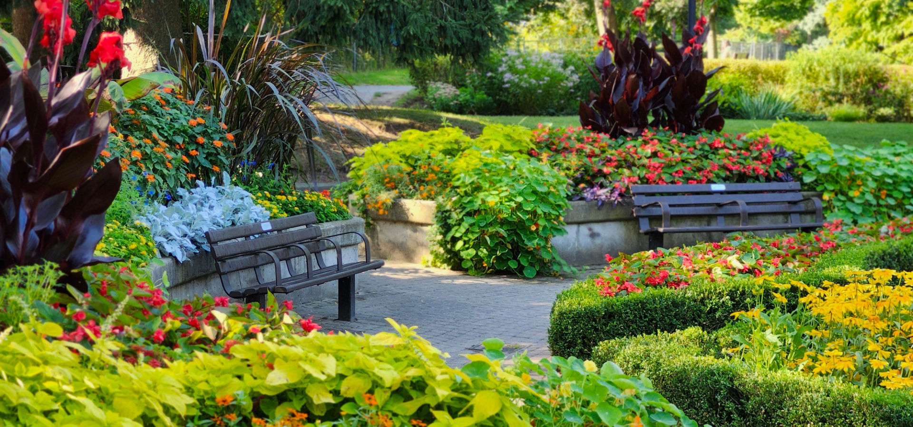

Stone brings structure, character, and permanence to a landscape. At Willowstone Landscaping, we design and build stone features that are both practical and beautiful, using materials selected to complement your home and the natural surroundings.
From an inviting new patio to a retaining wall that becomes part of the landscape itself, our stonework is designed with careful attention to proportion, placement, and craftsmanship.
Create a comfortable place to relax, entertain, and enjoy your landscape. We design custom patios using natural stone and pavers in a variety of colors, textures, and patterns.
Whether you want an intimate garden sitting area or a spacious patio for gatherings and outdoor dining, we'll create a design that works naturally with your home and the way you use your outdoor space.
Retaining walls can solve practical landscaping challenges while adding depth and character to your property. We build walls that help manage slopes, define planting areas, create raised garden beds, and provide structure to the surrounding landscape.
Our designs combine function with appearance, incorporating materials and shapes that feel like a natural part of the overall landscape rather than an afterthought.
A thoughtfully designed path does more than take you from one place to another. It can guide visitors through a garden, connect outdoor living areas, and add texture and visual interest to the landscape.
From formal paved walkways to informal stepping-stone paths, we can create an approach that complements the style of your property.
Sometimes smaller stone features make the biggest difference. Stone steps can provide attractive access across changing elevations, while borders and edging can give gardens and planting beds greater definition.
We can also incorporate decorative boulders and other natural stone accents into landscape designs to create focal points and bring additional texture to a space.
Every stonework project begins with the property itself. We consider your home's architecture, existing landscape, drainage, elevation, and intended use to create features that look like they belong.
Our goal is to combine lasting construction with thoughtful design—creating outdoor spaces you'll enjoy for years to come.